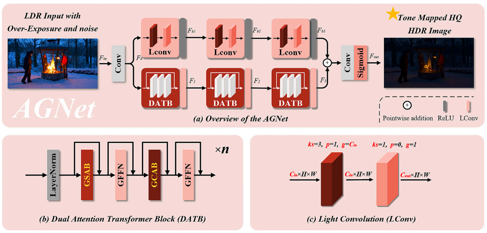
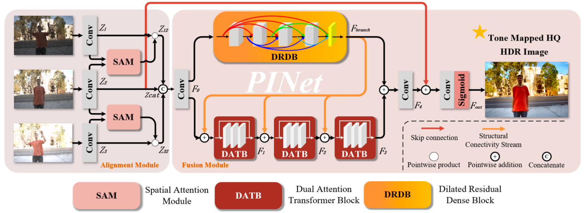
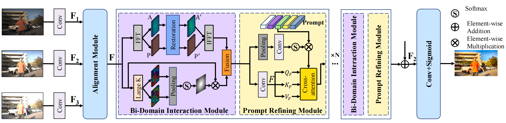
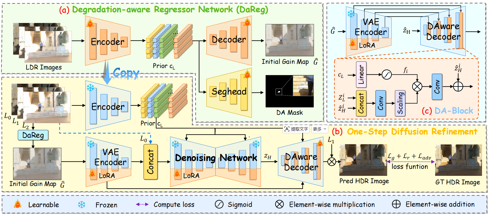

Our paper AGNet has been accepted by Neurocomputing.
👋 About Me
Hi! I am Weiyu Zhou (周威宇 in Chinese), a Master's student in the School of Computer Science at Northwestern Polytechnical University, advised by Prof. Qingsen Yan. I joined the Master's program in 2025 and expect to continue toward a Ph.D. through the direct M.S.-to-Ph.D. track in Fall 2026.
Before that, I studied Artificial Intelligence at Anhui University. My research interests include HDR imaging, image restoration, multimodal fusion, and generative artificial intelligence.
I am always open to research collaboration and academic discussions. Please feel free to contact me if you are interested in related topics.
📢 News
Our paper PINet has been published in Complex & Intelligent Systems.
Our paper DDPF-PR has been published in IEEE Transactions on Circuits and Systems for Video Technology.
Won 2nd place in the NTIRE 2026 Efficient Burst HDR and Restoration Challenge.
Won 2nd place in the NTIRE 2025 Efficient Burst HDR and Restoration Challenge.
Started the Master's program at Northwestern Polytechnical University.
🔬 Research Interests
HDR Imaging
Multi-exposure HDR reconstruction, RAW/burst HDR restoration, tone mapping, and gain-map modeling.
Image Restoration
Robust restoration under blur, noise, saturation, low-light scenes, and mixed degradations.
Multimodal Fusion
Cross-modal visual fusion using complementary information from multiple frames or modalities.
Generative AI
Diffusion and generative priors for high-fidelity image enhancement and reconstruction.
📝 Publications
Full list on Google Scholar. * Equal contribution.
Accepted Papers


Complex & Intelligent Systems 2026
Ghost-free High Dynamic Range Imaging under Degradation with PINet
Complex & Intelligent Systems, 2026

Preprints

🏆 Competitions
2nd
NTIRE 2026 Efficient Burst HDR and Restoration Challenge
Second place in the Efficient Burst HDR and Restoration track.
2nd
NTIRE 2025 Efficient Burst HDR and Restoration Challenge
Second place in the Efficient Burst HDR and Restoration track.
🎓 Education
Northwestern Polytechnical University
M.S. Student, School of Computer Science
Expected direct M.S.-to-Ph.D. track, Fall 2026
Advisor: Prof. Qingsen Yan
Anhui University
Major in Artificial Intelligence
☕ Misc
This homepage is under active construction. More information about research projects, code, datasets, teaching, and services will be updated soon.